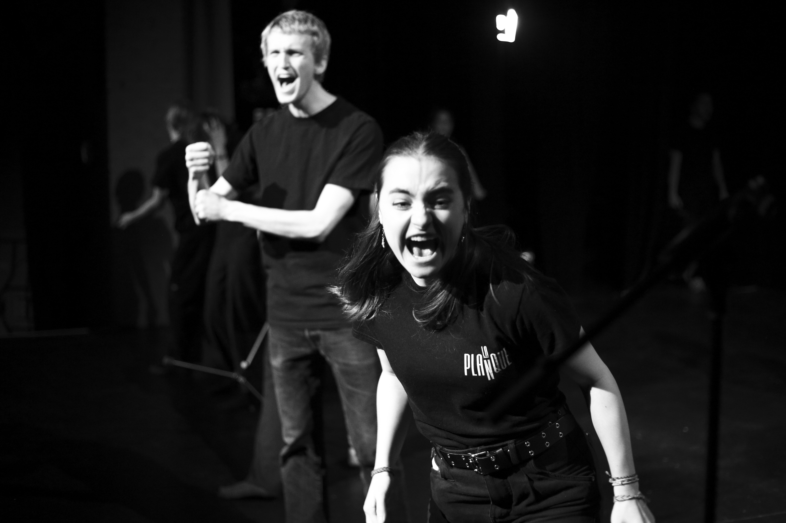
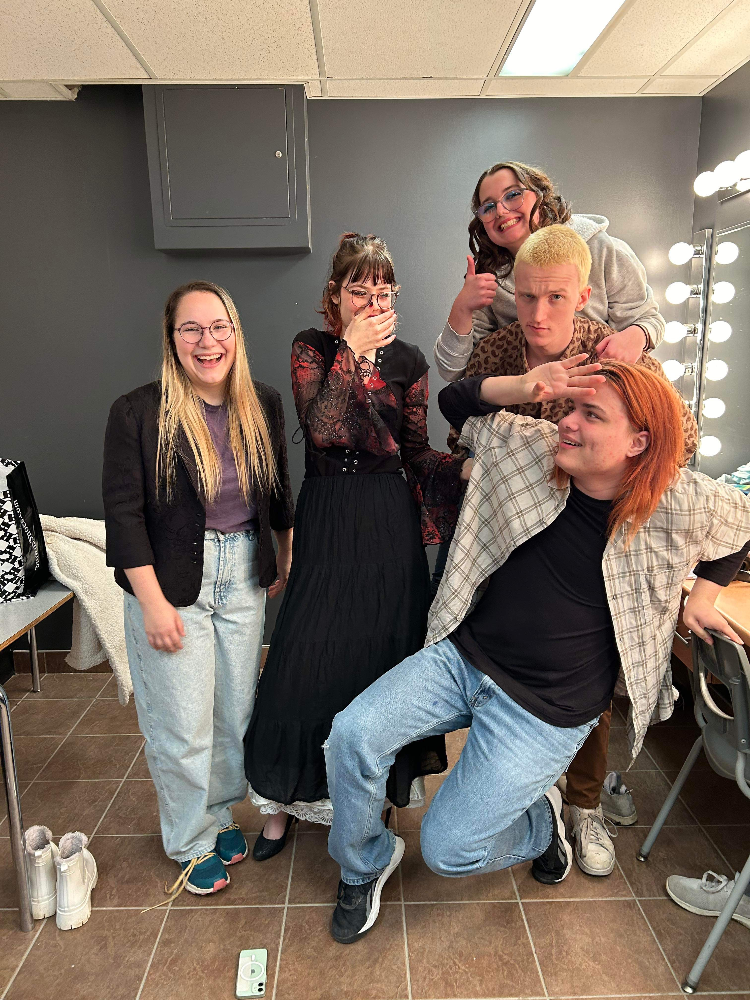
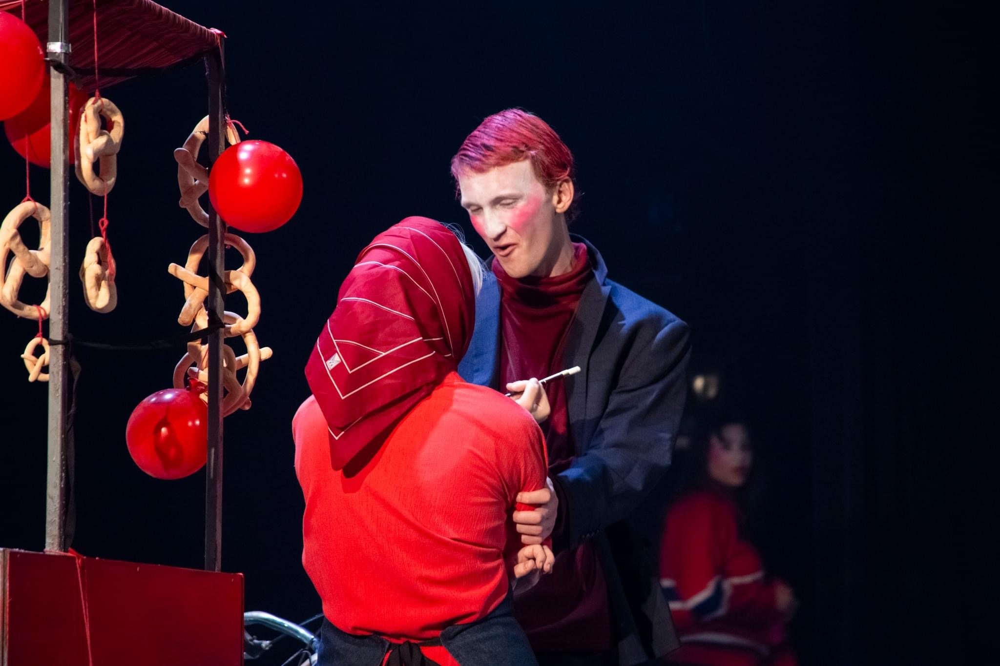
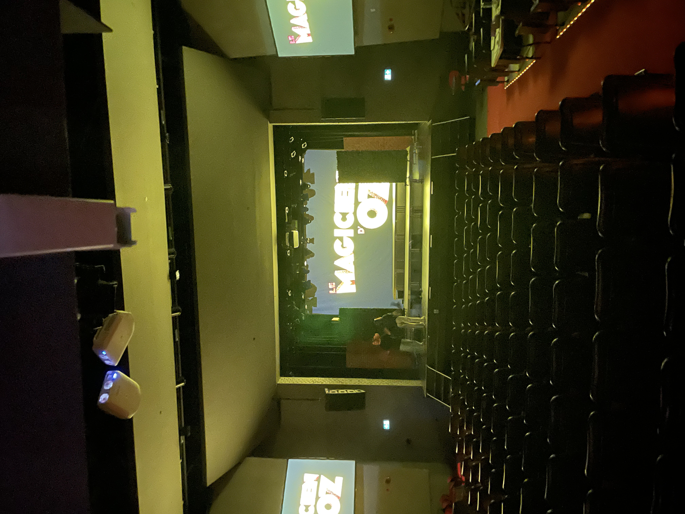

Art Lettre et communication — Profil Théâtre
Cégep Limoilou | 2022-2024
Programme collégial combinant arts et lettres avec un profil spécialisé en théâtre: écriture, pratique et production d'événements culturels.
Photos




1. Résumé du parcours
Avant ce programme, mon expérience du théâtre se limitait à l'improvisation et à quelques cours optionnels suivis au secondaire et au cégep. C’est lors de mon passage en Sciences humaines au Cégep de Sainte-Foy que le déclic s'est produit : en côtoyant des passionnés qui se préparaient aux auditions de jeu, j’ai ressenti l'impérieux besoin de découvrir le milieu théâtral.
Je me suis alors inscrit en Arts, lettres et communication, profil Théâtre au Cégep Limoilou. Ce programme a été ma véritable porte d’entrée dans cet univers. J’y ai découvert le jeu, la mise en scène, la conception et la dramaturgie. Mon intérêt initial s’est transformé en une passion dévorante. Je sors de cette formation initié, outillé et animé par une soif d’aller plus loin.
2. Cursus académique
Première année
- Acteur et parole (Sylvie Cantin) — Cours pratique d’initiation au travail de l’acteur : jeu, voix, diction et mouvement.
- Théâtre et vie d’artiste (Jean Bélanger) — Cours théorique d’initiation au milieu théâtral québécois actuel, visant à comprendre et explorer le paysage théâtral de Québec.
- Théâtre et langages (Jean Bélanger) — Exploration des langages scéniques, de la mise en scène, ainsi que de la conception lumière et sonore.
- Théâtre, repère et vision (Élie St-Cyr) — Histoire du théâtre, de la Grèce antique au XIXe siècle russe, combinant théorie et explorations pratiques.
- Art, cultures et sociétés (Dany Quinn) — Histoire de l’art et étude des grands courants (cours commun aux programmes d’art).
- Acteur et interprétation (Sylvie Cantin) — Suite du travail pratique avec une emphase sur l’interprétation. Présentation d’une première scène en français normatif classique devant public.
Deuxième année
- Acteur et engagement (Jean Bélanger) — Exploration du jeu dans une langue québécoise contemporaine. Présentation d’une scène devant public.
- Acteur et création (Marie-Ève Chabot-Lortie) — Initiation aux différentes méthodes de création théâtrale, de l’improvisation au carnet d’observation-création, ainsi qu'à l’écriture dramatique.
- Théâtre et enjeux culturels (Marie-Ève Chabot-Lortie) — Étude approfondie de l’histoire de la dramaturgie, axée sur la théorie, la lecture et l’analyse de classiques.
- Théâtre d’ici et d’ailleurs (Marie-Ève Chabot-Lortie) — Cours théorique sur le théâtre québécois du XXe siècle et ses enjeux sociaux.
- Acteur et identité (Annabelle Pelletier-Legros) — Élaboration et présentation devant public du projet final de programme.
3. Troupe de théâtre et auditions
À l'aube de ma deuxième année, cherchant plus de défis et de temps de jeu, je me suis impliqué dans la troupe parascolaire du Grand Escalier. J'y ai rencontré une communauté partageant ma passion, dont un partenaire pour les auditions d'interprétation.
Cette expérience m'a permis de comprendre la création d'un spectacle, notamment grâce au travail fascinant de notre metteur en scène, Maxime Perron. J'y ai également bénéficié de coachings de voix et diction offerts par Valérie Boutin. Cette dernière est devenu ma coach dans mon processus d'audition en interprétation.
3.1 Mère Courage et ses enfants
La pièce a été jouée cinq fois, dont une représentation devant les troupes de tous les cégeps du Québec lors de l’Intercollégial de théâtre 2024.
3.2 Auditions
Ce parcours s'est soldé par mon admission en interprétation à l'École de théâtre du Cégep de Saint-Hyacinthe.
4. Projet final et mise en scène
Lors de mon ultime session à Limoilou, j’ai lancé, avec quelques camarades, un défi de création théâtrale dans le cadre du projet final. Bien que l'écriture fût collective, j'ai assuré le rôle de metteur en scène.
Ce projet fut une révélation. Alors que je passais mes auditions en jeu et que j'étais acteur dans la troupe, cette expérience de mise en scène a chamboulé mes certitudes quant à ma carrière théâtrale.
5. Rôles interprétés
- Je ne trompe pas mon mari — Georges Feydeau — Saint-Franquet — Acteur et interprétation (Sylvie Cantin)
- Nous nous sommes tant aimés — Simon Boulerice — Lancelot — Acteur et engagement (Jean Bélanger)
- Mère Courage et ses enfants — Bertolt Brecht — L’Aumônier — Troupe du Grand Escalier (Maxime Perron)
- Lucky Lady — Jean-Marc Dalpé — Bernie — Auditions (Coaching : Valérie Boutin)
- Le Dîner de cons — Francis Veber — Pierre Brochant — Auditions (Coaching : Valérie Boutin)